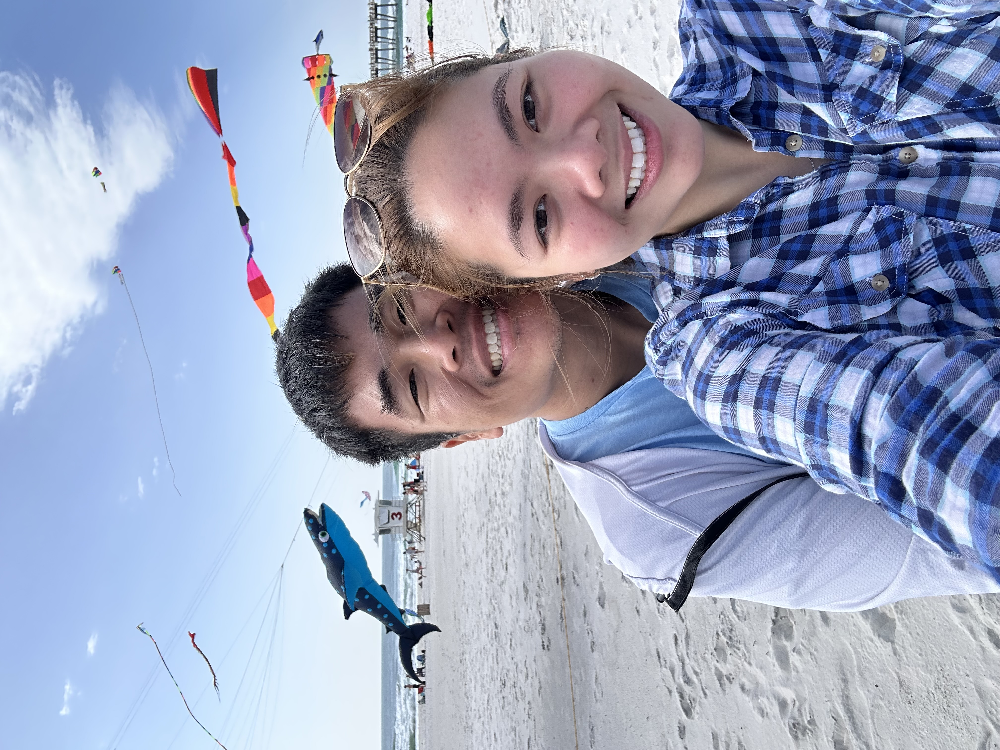

Day 2 - March 16

Pensacola Beach Boardwalk
Lots of kites and music. We have never seen such scene outside of asia. I believed we saw blue angels zooming over us multiple times throughout the day.

Lighthouse Museum/ Blue Angels
We were on the way to the National Naval Aviation Museum, but decided to stop by the lighthouse first. The view from the top was amazing, but the walk up and down was tough. I ended up with trembling hand due to gripping the railing too hard. The drive was quite long from the hotel, but we enjoyed our views for the day.